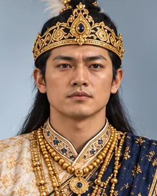

1696
ৰুদ্ৰ সিংহ
1696–1714 · Thirtieth Ahom king

Took the kingdom to its peak, founded Rangpur as the capital, campaigned against the Dimasa and Jaintia kingdoms (1706–08) and planned a great war on Mughal Bengal, dying before it began.
Born c. 1665; died 27 August 1714 at North Guwahati.
Record confidence: high.
1696

1698–1705

1703

c. 1705

1706–1707

c. 1710

1713

27 August 1714